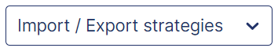

Strategy Deployment
 Related "Appendices" documentations
Related "Appendices" documentations
SEARCH TIP Press CTRL + F (Windows and Linux) or CMD + F (Mac) to search within this page.
To access this screen, click: Strategy > Defining the strategy > Strategy deployment.
Some actions, such as screen access, are permitted only for authorized users, that is, users with the appropriate profile. In other words, if the user does not have the right profile, the user cannot perform the action.
To configure this security (also called user rights), complete the following steps:
-
Define the profiles in the Profile Management screen.
-
Define users and attach one or more profiles to them in the User Management screen.
-
Assign user rights to the desired profiles in the Profile Matrix screen.
The table below contains screen actions that are related to user rights:
| Module | Screen | Action |
|---|---|---|
|
Defining the strategy |
Strategy deployment |
Screen access |
|
Create a target |
||
|
Update a target |
||
|
Delete a target |
||
|
Define the targets |
||
|
Freeze the targets |
||
|
Copy the targets |
||
|
Deploy an action |
||
|
Propose an alternative target |
||
|
Validate an alternative target |
||
|
Reject an alternative target |
||
|
Create action |
||
|
Budget definition screen access |
||
|
Enter budgets |
Introduction
This screen enables you to view and edit the content of the strategies organized in a five-level hierarchy (Strategy → Stake → Target Level 1 → Target Level 2 → Action).
With the timeline at the top of the screen, you can:
-
View the entire period of the strategy
-
Filter a single year by clicking the desired year
For detailed hierarchy information and examples, see Strategy Deployment Hierarchy below.
Strategy Deployment Hierarchy
Strategy deployments follow a five-level hierarchy. Each level can contain one or more items from the next level down.
Hierarchy structure:
| Level | Name | Description |
|---|---|---|
|
1 |
Strategy |
Top-level strategic initiative with defined timeframe. |
|
2 |
Stake |
Strategic priority within the strategy. |
|
3 |
Target level 1 |
First-level measurable target. |
|
4 |
Target level 2 |
Second-level specific target. |
|
5 |
Action |
Concrete operational task. |
Example Hierarchy:
-
Strategy: Carbon Footprint Reduction 2025-2030
-
Stake: Reduce Carbon Footprint
-
Target level 1: Reduce Scope 1 Emissions by 30%
-
Target level 2: Reduce Transportation Emissions by 40%
-
Action: Electrify Delivery Fleet
This demonstrates how strategic objectives cascade from broad initiatives to specific operational tasks.
Recommended Workflow
-
Create strategies on the Strategy Management screen.
-
Create stakes on this screen.
-
Create targets level 1 under each stake.
-
Create targets level 2 under each target level 1.
-
Create actions under each target level 2.
-
Configure indicator tracking:
-
Bind quantitative indicators to stakes, targets, and/or actions for progress tracking.
-
Optional: Bind financial indicators to actions for OPEX and CAPEX tracking.
-
-
Enter quantitative target values on the Indicator Tracking screen.
View or Hide the Deployment Levels
To view deployment levels for a strategy, select the Strategy and the Entity in the point of view (POV).
A nested grid appears.
{kind=link}
By default, you can view the first deployment level, which is the stake.
To view the other deployment levels (in order, targets level 1, targets level 2, and actions) one by one, click the  on the stake, target level 1, or target level 2 row you want to display.
on the stake, target level 1, or target level 2 row you want to display.
To hide these levels one by one, click the  on the stake, target level 1, target level 2, or action row you want to hide.
on the stake, target level 1, target level 2, or action row you want to hide.
To view all deployment levels at once, click the button.
To hide all deployment levels at once, click the button again.
{kind=link}
Move a Deployment Level
You cannot move a deployment level for which data is already collected.
Moreover, you need to check the deployment level dates, as well as the entities on which the deployment levels are deployed. To enable moving a child deployment level:
- The child deployment level start and end dates must be within the start and end dates of its parent deployment level.
- The child deployment level must be deployed on the same entities as its parent deployment level.
You can rearrange stakes, targets level 1, targets level 2, and actions, among themselves. You can also move targets level 1 from one stake to another, targets level 2 from one target level 1 to another, and actions from one target level 2 to another.
To do so, drag and drop the row of the deployment level you want to move.
Search for a Deployment Level
To search for a deployment level, enter at least two letters in the search box.
As you type, the deployment level list changes.
Create a Deployment Level
Before Creating Deployment Levels
-
Plan your hierarchy: Define all stakes, targets, and actions before starting.
-
Verify date ranges: Ensure child date ranges fit within parent ranges.
-
Confirm entity access: Check that you have rights to all necessary entities.
-
Prepare indicators: Identify which indicators you will bind to deployment levels.
Required User Rights
-
Stake creation: "Screen access" right
-
Target creation: "Screen access" + "Create a target" right
-
Action creation: "Screen access" + "Create action" right
See Security Notes for details.
Procedure
To create a deployment level:
-
Determine which level you want to create and click the corresponding button:
Deployment Level Location Button to Click Stake
Top right of the screen
Create stake
Target level 1
End of a stake row

Target level 2
End of a target level 1 row
Action
End of a target level 2 row
then New actionNOTE This procedure creates actions from scratch. For alternative methods, see Alternative Action Creation Methods. -
Fill out the Identification and Deployment tabs in the Create/Edit pop-up panel.
You can always go back to the main screen and fill out optional tabs later. To do so, click the  button at the top left of the pop-up panel.
button at the top left of the pop-up panel.
Navigation Between Tabs
Button labels change based on the current tab:
| Tab | Button Displayed |
|---|---|
|
Identification |
Save |
|
Deployment |
Deploy |
|
Follow-up |
Save and continue |
|
ESRS link |
Save |
You can also use the Previous button or click tab names directly after saving initial data.
Identification Tab
The first step in creating a deployment level is to provide identification items.
Below are two tables, the first one providing you mandatory fields, the second one the optional fields:
| Field | Description |
|---|---|
|
Label |
Deployment label in all available languages. |
|
Start date |
Start date of the deployment level. Must be lower than end date and within the time frame of the strategy and the higher deployment levels. |
|
End date |
End date of the deployment level. Must be higher than start date and within the time frame of the strategy and the higher deployment levels. |
|
Periodicity |
Data collection frequency of the deployment level:
|
|
Theme |
NOTE Field only available for actions. Action theme. |
| Field | Description |
|---|---|
|
Icon |
NOTE Field only available for actions. To add an icon to an action:
|
|
Person in charge |
User responsible for the deployment level. |
|
Pinned to home page |
NOTE Field only available for stakes, targets level 1 and 2. Check the Pinned to home page box to pin a stake or target bound to an indicator to the homepage. Back to the main screen, you can also click the button at the end of the stake or target row.
The targets level 1 and level 2 appear in the Advancement of targets block of the homepage Overview tab. The stake appears in the homepage Performance tab. The stake, target level 1, and target level 2 appear in the homepage Action portfolio tab.
NOTE For more information, see Home Screen. |
|
Description |
NOTE Field only available for actions. Action description. |
|
Private action |
NOTE Field only available for actions. When the action is private, you cannot create a new initiative based on this action. To set the action as private, check the Private action box. |
|
Attachments |
To add an attachment, drag and drop or click the Attachments zone.
NOTE Attachment limitations:
|
To access the Deployment tab, click the Save button.
Deployment Tab
The second step in creating a deployment level is to deploy it on entities. To do so:
-
Select the Deployment Mode:
-
Default: Only one entity is selected or deselected on click.
-
The entity and its children: The entity and its direct child entities (N-1 level) are selected or deselected on click.
-
The entity and its descendants: The entity and all its child entities are selected or deselected on click.
-
-
Check the desired boxes to select one or multiple entities.
To access the Follow-up tab, click the Deploy button at the bottom right of the Deployment tab.
Follow-Up Tab
The third step in creating a deployment level is to fill out information on quantitative, financial, and/or human resources follow-up:
| Block | Description |
|---|---|
|
Quantitative follow-up |
By linking a deployment level to an indicator for quantitative follow-up, you can retrieve its values and then track its progress over time. NOTE An indicator linked to a deployment level is called a quantitative target in the CSR Insight application. For more information, see Indicator Tracking. You can bind the same indicator to two different targets with a different input mode. However, it is highly recommended to keep the same input mode for different targets that belong to the same strategy.
Possible but not recommended setup:
Recommended setup:
Moreover, carefully select all the entities concerned when creating a target level 1 or a target level 2. If you add new deployed entities for a target after consolidating target and progress data, it can result to inconsistencies. A recalculation may then be necessary. |
|
Financial follow-up |
NOTE Block only available for actions. By linking an action to an indicator for OPEX or CAPEX follow-up, you can retrieve its values as OPEX or CAPEX actuals, and then track its progress over time. You can also allocate an OPEX or CAPEX budget to an action on the Budget Definition screen. |
|
Human resources follow-up |
NOTE Block only available for actions. Allocate FTE / staffing to an action. |
To fill out information on quantitative follow-up:
-
Click the Bind to an indicator button from the Quantitative follow-up block.
The Choose indicator pop-up panel appears.
-
Select the following items from the drop-down menus:
-
Chapter
-
Theme
-
Section
-
Indicator
Quantitative target information is automatically displayed, that is:
-
Absolute value
-
Percentage
-
Target year
-
-
Select the Input mode from the drop-down menu that appears:
-
Bottom up: Quantitative target values of parent entities are automatically consolidated by aggregation of the quantitative target values of the child entities.
-
Top down: Quantitative target values of parent entities are consolidated using a distribution mode. Quantitative target values of child entities are consolidated by recalculation.
The indicator label and unit appear in chips at the top of the action card.
-
-
Click the
 button to enter, consolidate and distribute quantitative target values across the entities and on the temporal axis through the Indicator Tracking screen.
button to enter, consolidate and distribute quantitative target values across the entities and on the temporal axis through the Indicator Tracking screen.
To fill out information on financial follow-up:
-
Click the
button to define an OPEX or CAPEX budget.The Budget Definition screen appears.
-
Optional: Retrieve OPEX or CAPEX actuals from the values of an indicator:
-
Click the Bind to an indicator button from the Financial follow-up block.
The Choose indicator pop-up panel appears.
-
Select the following items from the drop-down menus:
-
Chapter
-
Theme
-
Section
-
Indicator
-
NOTE You can manually enter OPEX or CAPEX actuals instead of retrieving them from an indicator. Read View or Enter OPEX and CAPEX Actuals.
-
To fill out information on human resources follow-up, enter the number of FTE / staffing you want to allocate to the action from the Human resources follow-up block.
To access the ESRS link tab, click the Save and continue button at the bottom right of the Follow up tab.
ESRS Link Tab
NOTE This tab is related to the CSRD module. For more information, see Corporate Sustainability Reporting Directive (CSRD).
After creation, a target or action automatically inherits the ESRS links and responses to MDRs from higher deployment levels.
When a stake or target is updated, ESRS links and responses to MDRs are propagated by overwriting the values of the associated targets and/or actions.
You can manually edit inherited information for an action. This change does not affect the associated target or other actions.
You can also manually copy one or all responses to MDRs on associated targets and actions:
-
To copy the response to an MDR, click on the
 button corresponding to the desired MDR.
button corresponding to the desired MDR. -
To copy all the responses to the MDRs, click on the
 button.
button.
An  icon appears for each inherited response.
icon appears for each inherited response.
The fourth and last step in creating a deployment level is to link it to the ESRS to which it contributes and enter responses to MDRs.
To do so:
-
Check one or multiple boxes to select ESRS to which the deployment level contributes.
-
Fill out the fields that allow text entry for each MDR category, as desired:
-
MDR Policies
-
MDR Action
-
MDR Target
NOTE There are three types of fields:- Qualitative fields: You can enter rich text (bold, italic, etc.).
- Normal fields: You can enter plain text.
- Automated fields: Fields that are automatically populated when the expected data exists.
-
-
Click Save.
A link is automatically created between the CSR Insight item and the corresponding data points and data parts on the Generation of Regulatory Reports screen, except if they are already linked to another item type.
This type of link is called Strategy.
-
Optional, but recommended: Edit or enter new responses through the Summary of Contributions to MDRs screen.
You have finished filling out all tabs.
After Creating a Deployment Level
You have successfully created a deployment level. The next steps depend on the type and purpose of the deployment level you created:
-
For quantitative targets (stakes, targets, or actions bound to indicators):
-
Enter quantitative target values on the Indicator Tracking screen. See Enter or Edit Quantitative Target Values.
-
Monitor progress on the Quantitative Target Synthesis screen.
-
-
For actions with financial tracking:
-
Define budgets on the Budget Definition screen.
-
Track actuals through the Action Reports screen.
-
-
For ESRS-linked items:
-
Review summaries on the Summary of Contributions to MDRs screen.
-
Alternative Action Creation Methods
Attach a Non-Attached Action to a Target Level 2
To attach a non-attached action to a target level 2:
-
Click the
button on the row of the target level 2 you want, then From non-attached actions.The Associate action pop-up panel appears.
-
Optional: Search for the non-attached action you want to attach to the target level 2 by typing at least three letters in the search box, and/or using the Year, Indicator, and Theme filters.
As you type, or after selecting a filter, the list of non-attached actions changes.
-
Click the card of the non-attached action you want to attach to the target level 2.
The Action attachment pop-up window appears.
-
Click OK.
The action is now attached to the target level 2.
Turn an Initiative into an Action
To turn an initiative into an action:
-
Click the
button on the row of the target level 2 you want, then From initiative library.The Associate action pop-up panel appears.
-
Optional: Search for the initiative with which you want to create an action by typing at least three letters in the search box, and/or using the Duration, Indicator, and Theme filters.
As you type, or after selecting a filter, the initiative list changes.
-
Click the card of the initiative you want to turn into an action.
The Create new action pop-up panel appears with the initiative information filled in.
-
Fill out other required information, and optional information if desired, as explained in the Create a Deployment Level section above.
The initiative is turned into an action and added below the target level 2.
NOTE To view and manage initiatives, see Library of Initiatives.
Edit a Deployment Level
To resume filling out the other tabs or edit existing information, click the  button at the end of the desired deployment level.
button at the end of the desired deployment level.
The Edit pop-up panel appears in full screen.
- Identification and Deployment tabs: Editable only when no data exists
- Actions: Must be non-approved for editing
- Exception: Action labels and descriptions are always editable.
Enter or Edit Quantitative Target Values
To enter or edit values for quantitative targets (stakes, targets, or actions bound to a quantitative indicator), click the action chip on the desired row.
The Indicator Tracking screen appears.
NOTE Depending on your profile, you can propose, validate, or reject an alternative value for a quantitative target.
See Indicator Tracking and Quantitative Target Synthesis.
Delete a Deployment Level
To delete a deployment level, click the  button of the row you want to delete.
button of the row you want to delete.
NOTE You can only delete from the last child item to the first parent item, one by one. To display the  button, refresh the page.
button, refresh the page.
Import or Export Strategy Content
To export strategy content:
-
Hover over the

button at the top-right of the table. -
Click Export strategies.
The Export strategies pop-up window appears with a download link.
-
Select one or multiple strategy items from the drop-down menu to choose what you want to export.
-
Click OK.
A download link appears.
-
Click the download link for the Excel file.
To import strategy content:
-
Export the strategies, as mentioned above.
-
Open the exported Excel file.
-
Fill in the Excel template, then save your data.
NOTE To help you fill in the Excel template, see the Fill In the Excel template appendix.
-
Back to the CSR Insight application, hover over the button at the top-right of the table.
-
Click Import strategies.
The Import strategies pop-up window appears.
-
Choose a file.
-
Select one or multiple strategy items from the drop-down menu to choose what you want to import.
-
Click OK.